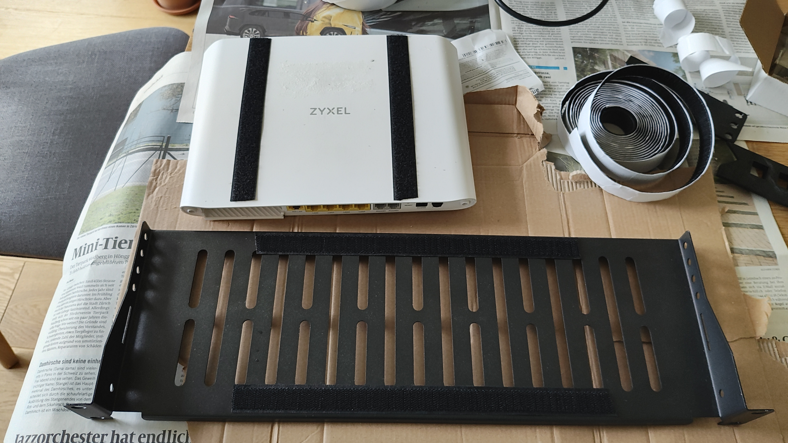
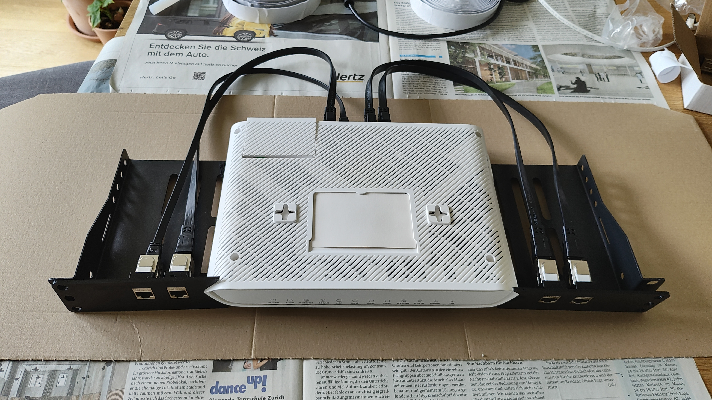
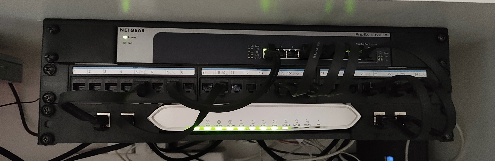

While being one of the few routers approved for Swiss 10 gigabit fiber networks, there doesn't seem to be an "official" rack mounting option for the Zyxel AX7501.
My first idea was to 3d-print two "ears" that would hold the router in place, but the odd shape of the device made me give up on this quickly.
So I just "velcroed" it to a regular rack shelf and just used 3d-printed covers with keystone mounting ports to expose the ethernet ports at the front panel.
The stl file for the covers can be found at Thingiverse.


